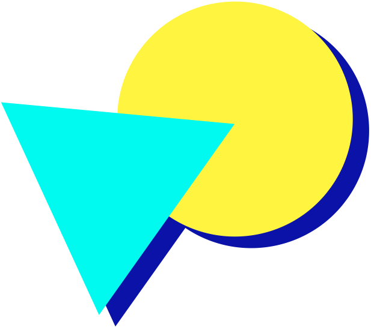
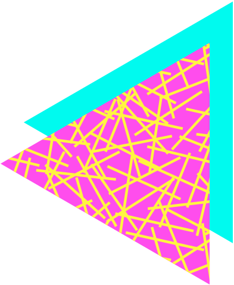

Overview
Introducing Fluro, the new way to keep track of your day, in stunning retro.
Fluro supercharges the iconic 80's LED scroller with modern functionality; allowing you to install one right on your desktop that cycles through everything you'd need to stay on top of your day:
- 📰 The latest news: See headlines for your region, or customise it down to a specific category* (i.e. politics or sport), with stories curated by Bing.
- 🌤️ The weather: See real-time weather information and forecasts for your current location, or one of your choice.
- 📆 Your calendar: See your next few calendar events, including their names and times – exactly as they appear in Apple Calendar. 
- 📋 Your reminders: See an amount of your reminders of your choosing, as they appear in Apple Reminders.
- 🎵 Your current song: See the artist and title of your currently playing Apple Music song.
- 🌎 And of course, the date & day of the week; something we all forget too often.
Fluro matches your unique vibe, with endless customisation options to make it look just right for you. The app ships with five retro-inspired fonts to choose from, plus seven dazzlingly bright colours inspired by the fluorescence of the 80's. And of course, you have granular control over what exactly you want scrolling through your screen – including its order, and even the option to add your own text on top.
Experience how retro can supercharge your day with Fluro on Mac first, coming to iOS, Android, and Apple Vision later. Not convinced yet? Just watch the preview video!
Thank you to Fluro's data providers: the Bing News API, and weatherapi.com for making Fluro possible.
* News customisation by category is supported in Australia, Canada, China, India, Japan, the United Kingdom, and the United States.